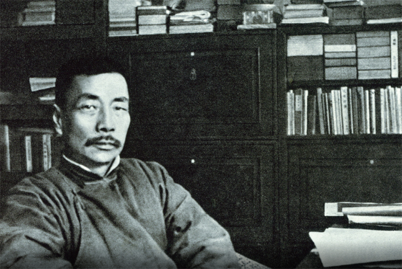
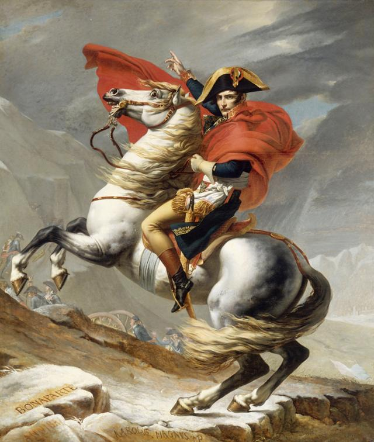
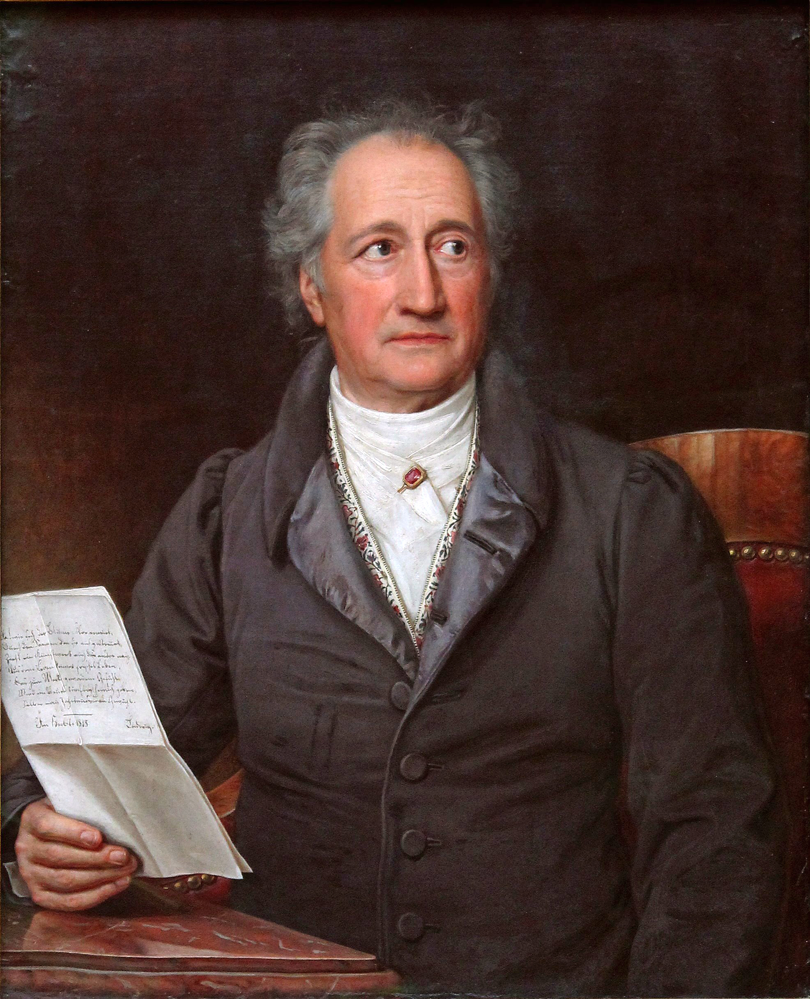
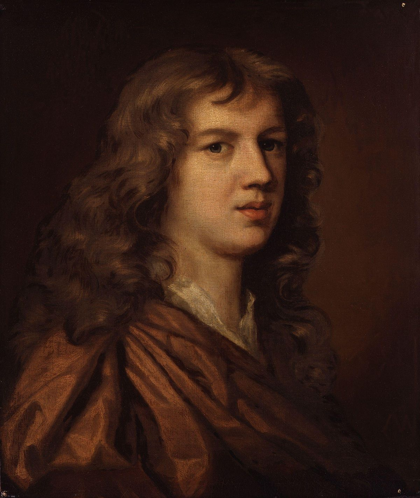
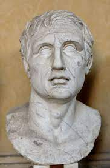
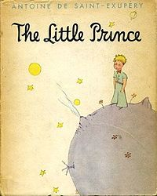
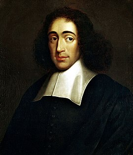

인생은 늘 쉽게 풀리지 않습니다.
사실 지금 우리가 살고 있는 이 세상도 결코 좋아보이진 않습니다.
지금도 세상 어디에서는 전쟁이 일어나고 있고,
환경은 매일마다 더욱 파괴되어만 가고 있고,
권력있는 자들의 비리나 서로 미워하는 사람들...
지금 이 세상을 소위 "답이 없다"고 말하기도 합니다.
세상을 살아갈 이유가 없어 보이기도 합니다.
하지만, 그와 반대로 이 세상은 점점 더 살기 좋아지고 있을거에요.
전쟁을 반대하는 사람들의 목소리,
환경을 지키기 위해 노력하는 사람들,
서로 사랑하고 다툼 대신 평화를 가져오는 사람들...
우리는 더 나은 미래를 그려나갈 힘이 있습니다.
그런 힘들은, 다름아닌 희망을 통해서 실현되곤 합니다.
이번 별에선 희망을 가져와주는 명언들을 준비했습니다. 함께 보시죠.
"나는 더 나은 미래를 위해 싸운다.
[제이스]-리그 오브 레전드 캐릭터
“희망은 볼 수 없는 것을 보고, 만질 수 없는 것을 느끼고, 불가능한 것을 이루게 해 준다.”
[헬렌 켈러]

“希望是本无所谓有，无所谓无的, 这正如地上的路;
其实地上本没有路, 走的人多了, 也便成了路。
희망은 원래 있다고 할 수도 있고 없다고 할 수도 있다.
이는 마치 땅위의 길과 같다. 본래 땅위에는 길이 없었다.
걷는 사람들이 많아지다 보면 자연스레 길이 되는 것이다.”
[鲁迅 루쉰]

“내 비장의 무기는 아직 손 안에 있다. 그것은 희망이다.”
[나폴레옹 보나파르트]

"꿈을 계속 간직하고 있으면 반드시 실현할 때가 온다."
[요한 볼프강 폰 괴테]
“생명이 있는 한 희망이 있다.
희망은 만사가 용이하다고 가르치고, 실망은 만사가 곤란하다고 가르친다.
실망은 사물을 부정적으로 보도록 유도하지만, 희망은 사물을 긍정적으로 보도록 유도한다.
실망을 친구로 삼을 것인가, 아니면 희망을 친구로 삼을 것인가. 어느 쪽을 선택할 것인가.”
[J. 위트 (확실하지 않음)]

“희망은 인간이 견디는 모든 병고 가운데 가장 보편적인 유일한 치료제다.”
[Abraham Cowley 에이브러햄 코울리]

“역경은 희망에 의해서 극복된다."
[메난드로스]
“희망은 장래를 자기 것으로 만드는 강한 도구이다.
희망을 버리지 않는 한 인생은 장래의 꼬리를 잡고 있는 것이다.
희망을 송두리째 끊어 버리는 것은 죽음과 마찬가지이다.
절대 희망을 놓아서는 안된다.”
[유태격언]

"사막은 아름다와.
사막이 아름다운건 어디엔가 우물이 숨어있기 때문이야...
눈으로는 찾을 수 없어, 마음으로 찾아야 해."
[어린왕자]

“비록 내일 세계의 종말이 온다 할지라도, 나는 오늘 한 그루의 사과나무를 심겠다.”
[바뤼흐 스피노자]
"Hope in reality is the worst of all evils because it prolongs the torments of man.
희망은 모든 악 중에서도 가장 나쁜 것이다. 그것은 인간의 고통을 연장시키기 때문이다.”
[프리드리히 니체]